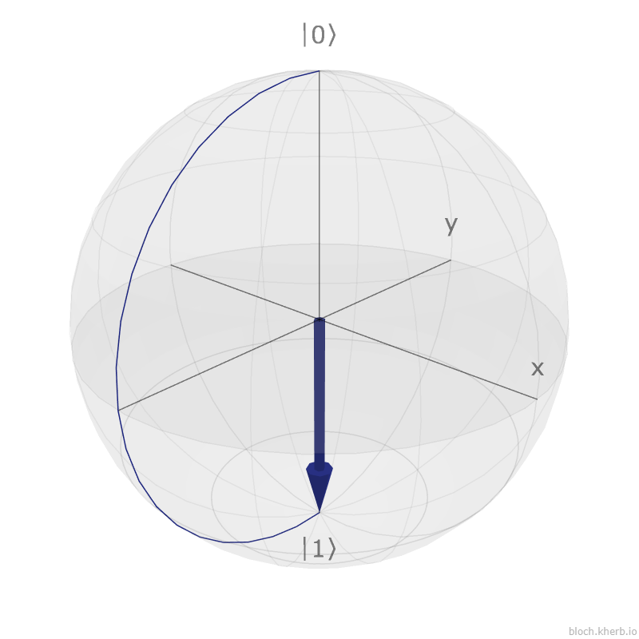
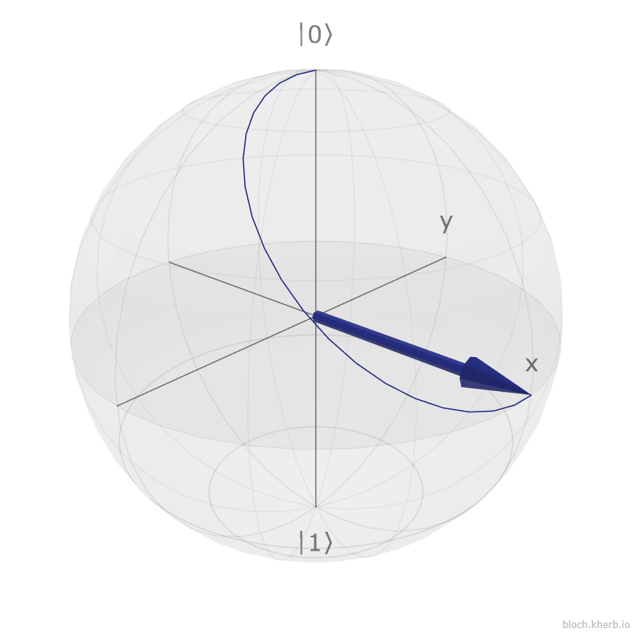
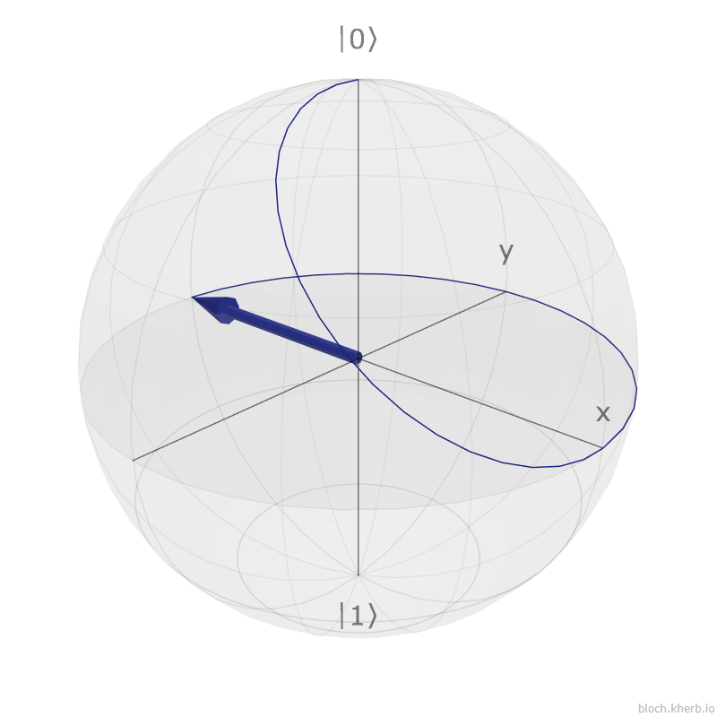

From Linear Algebra to Quantum Reality
Time: 45 min Prerequisites: QC03, QC04In this laboratory, you will move from the mathematical abstraction of vectors to actual quantum manipulation. The goal is to develop an intuition for how gates affect the state of a qubit, visually (via Composer) and statistically (via Measurement).
We use two different visualizations in this lab:
Q-Sphere Phase Color Code (IBM Standard):

Vector points DOWN ($|1\rangle$).

Vector points to X-Axis ($|+\rangle$).

Vector points to NEGATIVE X-Axis ($|-\rangle$).
In Exercise 3, we saw the "Red Dot" (Phase) appeared but the probabilities didn't change.
How can we prove the Red Dot exists using a real computer that only sees 0s and
1s?
Launch the notebook to perform the Interference Experiment.
Use the link provided by your instructor
Answer these questions to check if you have connected the Visual Practice (Composer) with the Mathematical Theory.
In Exercise 2, applying the H Gate produced two dots on the Q-Sphere (North and
South), both colored Blue.
Based on Lesson QC03, what does this color tell us about the mathematical
state?
In Exercise 3, the Z Gate turned the bottom dot ($|1\rangle$) Red.
Which mathematical formula from Lesson QC04 corresponds to this visual effect?
In the Jupyter Notebook, you ran a circuit 1000 times. Why did you likely get results like "492 vs 508" instead of exactly "500 vs 500"?